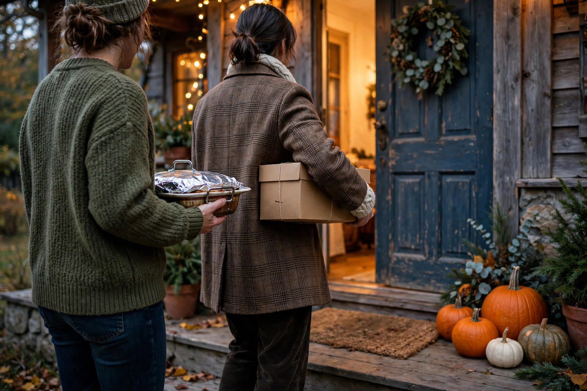

Potluck Thanksgiving that actually works

A potluck Thanksgiving can be the best version of the holiday: more variety, less work for the host, and everyone invested in the meal. It can also be a disaster — three people bring dessert, nobody brings a vegetable, and half the food arrives cold at 7 pm. The difference between the two isn't luck. It's a list and a little coordination.
The host's real job
In a potluck, the host isn't the cook — the host is the coordinator. Your jobs:
- The turkey and the table. The host handles the bird (it's the hardest thing to transport) plus plates, cutlery, glasses, and the space. This is the non-negotiable core — everything else can be assigned.
- The category list. Break the meal into slots: two appetizers, one salad, three sides, one extra vegetable, two desserts, drinks, rolls. People choose from the list instead of inventing dishes.
- The timeline. Tell contributors what time their dish needs to arrive and whether it needs oven space. "Come any time" produces a cold buffet.
The shared list (do this the week before)
One shared list, visible to everyone, updated by everyone. A group chat message gets buried; a simple shared document or a message thread pinned at the top works. The list needs four columns: dish, who's bringing it, serves-how-many, and needs-oven-space (yes/no).
That last column matters more than people expect. A home oven fits the turkey plus maybe one or two dishes. If five people plan to "just warm it up for 20 minutes," someone's food is being served cold. Cap the oven-needs list at two dishes and tell everyone else to bring food that travels well at room temperature or in its own slow cooker.
Assigning dishes without hurt feelings
Let people pick from the category list first — most guests have a signature dish they're proud of, and a potluck should feel like everyone's best on one table. But the host keeps two quiet powers:
- The veto on duplicates. Two mashed potato dishes is fine (someone's will be better and that's okay). Two identical green bean casseroles is a waste of a slot. Steer the second person to an open category.
- Filling the gaps. Nobody ever volunteers for the salad or the cranberry sauce. The host quietly claims the unglamorous essentials — or assigns them to the most reliable guest.
Transport: getting food there edible
Share these three rules with contributors — most potluck disasters happen in cars:
- Hot food travels wrapped. Towels around a foil-covered dish, wedged on a flat car seat (not the trunk), keep food hot for a surprisingly long drive. Insulated carriers are even better.
- Cold food stays cold. A cooler with ice packs for anything dairy-based, salads, or desserts with cream. A warm car is not a refrigerator.
- Finish at home, not at the host's. Dishes that need "just 10 minutes in the oven" should arrive ready to eat. The host's oven is already the most contested real estate in the house.
Food safety for the shared table
With many cooks and a long afternoon, keep one rule front and centre: perishable food shouldn't sit out at room temperature for more than about 2 hours. Put food out in waves if dinner stretches long, and get leftovers into the fridge promptly after the meal — the leftover game plan covers safe storage in detail. Label dishes with common allergens if you can (nuts, dairy, gluten); it takes ten seconds and saves someone a bad evening.
After the meal: the send-home system
End the potluck the way the best ones end: with containers. Ask guests to bring containers (or keep a stack of inexpensive ones on hand) and send everyone home with a mixed plate. It clears your fridge, makes people happy, and means the cook of the green bean casserole gets to eat it again on Tuesday — the highest compliment a potluck dish can receive.
Keep readingNext: leftover game plan — safe storage and second-day meals →